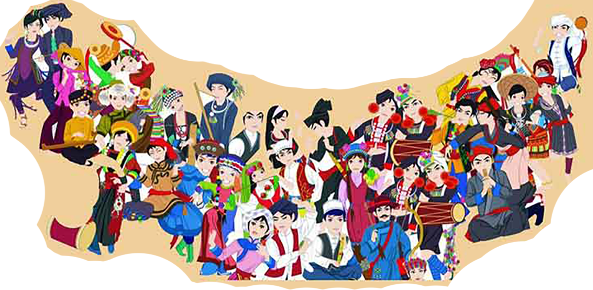

中国是个多民族的国家，各民族过新年的形式各有不同，古代的蒙古族，把春节叫做“白节，正月叫白月，是吉祥如意的意思，藏族是过藏历年。
朝鲜族
朝鲜族受汉文化影响也有过春节的习俗。除夕全家守岁通宵达旦，耶琴和筒第乐曲将人们带入新的-年，正月十五晚上举行传统的庆祝集会，由 被推选出来的几位老人登上“望月架”以先看到明月为福， 意味他们的儿孙健康，进步、万事如意， 随后，大家围着点燃的 “望月架”，伴着 长鼓、简箫、唢呐乐曲照翩起舞。
藏族
雅鲁藏布江中游地区，都有秋收前过“望果”节的传统。相传，这都是古代西藏六月过年的遗留，还有藏历十月过新年，源起于那些古老的时 代。大约公元13世纪，萨迦王朝统治西藏的年代，藏胞便在藏历正月过年了，
达斡尔族
达斡尔语的春节叫“阿涅”.年三十早上，家家洒扫庭院，在大门的正前方用杂物和家畜粪码成个高高的垛，傍晚燃起垛后，轻烟缭绕，到处 笼罩着节日的气氛，晚上全家吃手把肉并进行各种辞旧迎新活动。人们在房屋西侧雪地上插上香，朝西叩拜，以示缅怀祖先。
高山族
高山族的人们在春节里身着艳丽的民族服装，成群结队欢聚在村边寨头畅饮美酒，并在乐器伴奏下尽情欲舞。有的村寨还举行叉鱼比赛，开展背 篓球、竿球等体育活动，